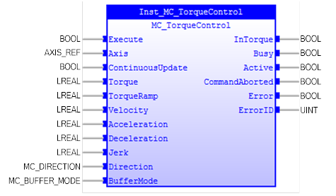
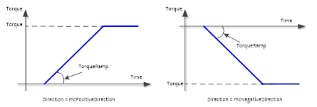
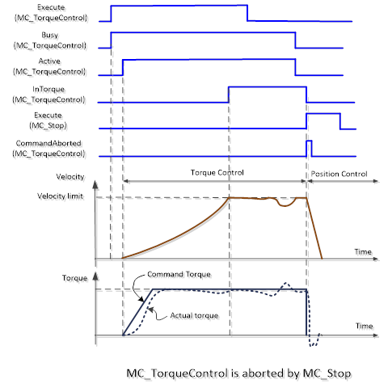
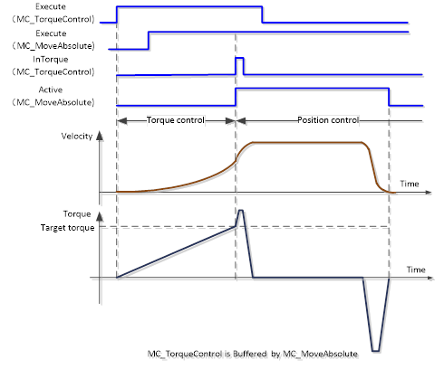
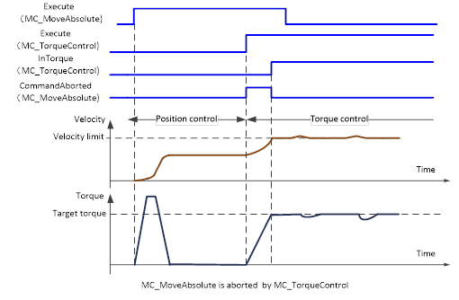
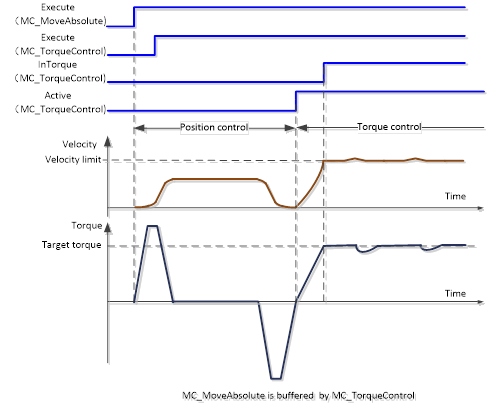

Available in future release
Continuously exerts a torque or force of the specified magnitude.

MC_TorqueControl is used to control the torque for the Torque Control Mode of a servo drive. It continuously exerts a torque or force of the specified magnitude. This magnitude is approached using ‘TorqueRamp’. ‘InTorque’ output is set when the commanded torque level is reached.
During torque control, the movement of axis is limited by velocity, acceleration / deceleration, and jerk, or by the value of the torque.
MC_TorqueControl can be executed from axis states ‘Standstill’, ‘DiscreteMotion’, ‘ContinuousMotion’, ‘SynchronizedMotion’, and control the axis in ‘ContinuousMotion’ state.
The controlled axis must be set on Torque Control Mode to allow control of the torque.
‘TorqueRamp’ is used to specify the slope from the currently specified command torque until the target torque is reached. The following diagram shows the behaviour in different ‘Direction’ input.

‘mcCurrentDirection’ will have one of the above two direction input behaviour.
‘Torque’ is the target torque of the axis and will not be exceeded. The maximum torque of the axis depends on the servo drive and motor.
‘Velocity’ limits the maximum velocity of the axis. When velocity of the axis reaches this velocity limit, the function block reduces the torque to reduce the axis velocity.
‘Acceleration’, ‘Deceleration’ and ‘Jerk’ have same function above.
‘Direction’ specifies the direction of the target torque which can be in the positive or negative direction of the axis.
The axis ceases to be in ‘Torque’ control mode when any Motion Control (not Administrative) FB is accepted on the same axis.
‘BufferMode’ specifies how to join the axis motions for this instruction and the previous instruction:
The following timing diagrams specify 4 typical applications of ‘BufferMode’:
1. MC_Stop is executed while MC_TorqueControl is is ongoing. It may take some time to activate MC_TorqueControl after being trigged before the axis changes to Torque Control mode. It will change to Position Control mode when MC_Stop starts execution.

2. After MC_TorqueControl starts execution, a Position Control mode FB (MC_MoveAbsolute in this example) is called with ‘BufferMode = mcBuffered’ before MC_TorqueControl is finished. The control mode will changed to Position Control mode from Torque Control mode when ‘InTorque’ is set.

3. After MC_MoveAbsolute starts execution, MC_TorqueControl is executed with ‘BufferMode = mcAborting’ before it finishes. The control mode will switch to TorqueControl mode from Position Control mode once MC_TorqueControl starts execution.

4. After MC_MoveAbsolute starts execution, MC_TorqueControl is executed with ‘BufferMode = mcBuffered’ before it finishes. The control mode will change to TorqueControl mode from Position Control mode once MC_TorqueControl starts execution.

Make sure the input and output parameters are of data type indicated in the table below.
MC_TorqueControl is applicable for force and torque.
When there is no external load, force is applicable. Positive torque is in the positive direction of velocity.
|
Name |
Data Type |
Description |
|
INPUTS |
||
|
Execute |
BOOL |
Start the motion at rising edge |
|
Axis |
AXIS_REF |
Reference to the axis where the switch is connected. |
|
ContinuousUpdate |
BOOL |
TRUE:when the FB is triggered (rising ‘Execute’), it will - as long as it stays TRUE – make the function block use the current values of the input variables and apply it to the ongoing movement. FALSE: with the rising edge of the ‘Execute’ input, a change in the input parameters is ignored during the whole movement. |
|
Torque |
LREAL |
Value of the torque Specify a percentage of the rated torque. Default value: 100.0% |
|
TorqueRamp |
LREAL |
Specify the change rate of torque from the current value to the target torque. The unit is %/s. Non-negative number. |
|
Velocity |
LREAL |
Absolute value of the maximum velocity. |
|
Acceleration |
LREAL |
Value of the maximum acceleration (acceleration is applicable with same sign of torque and velocity) |
|
Deceleration |
LREAL |
Value of the maximum deceleration (deceleration is applicable with opposite signs of torque and velocity) |
|
Jerk |
LREAL |
Value of the maximum jerk |
|
Direction |
MC_DIRECTION |
Specifies the direction of the torque. Enumerated type: - mcPositiveDirection - mcNegativeDirection - mcCurrentDirection Note: Torque input can be signed value |
|
BufferMode |
MC_BUFFER_MODE |
Enumerated type:
0: mcAborting
|
|
OUTPUTS |
||
|
InTorque |
BOOL |
Setpoint value of torque or force equals to the commanded value |
|
Busy |
BOOL |
The FB is not finished and new output value is to be expected. |
|
Active |
BOOL |
Indicates that the FB has control on the axis |
|
CommandAborted |
BOOL |
‘Command’ is aborted by another command |
|
Error |
BOOL |
Signals that an error has occurred within the FB |
|
ErrorID |
UINT |
Error identification |